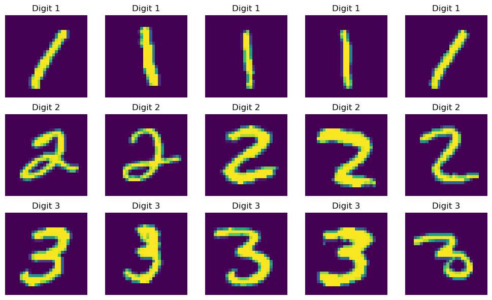
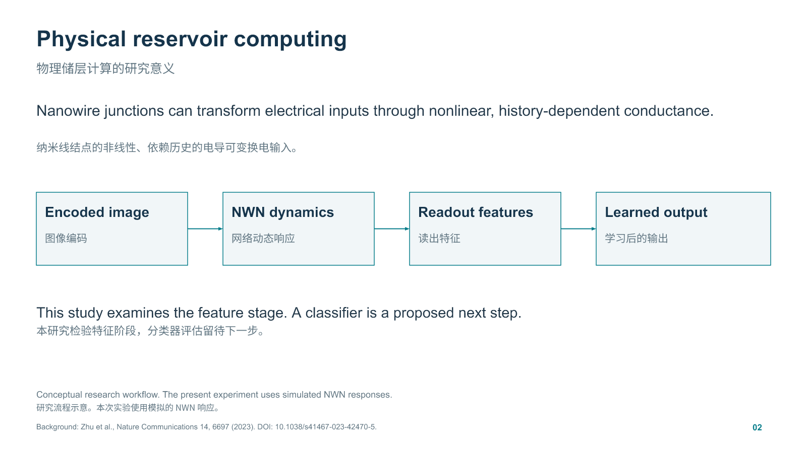
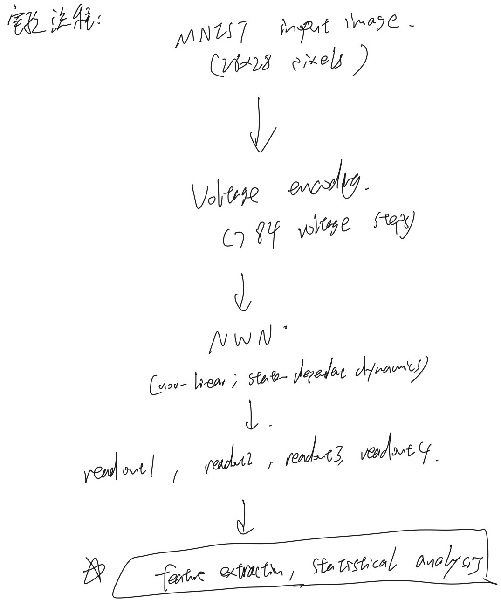
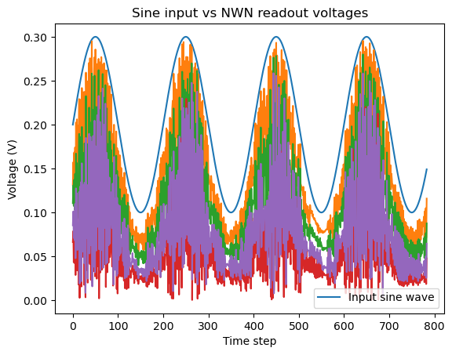
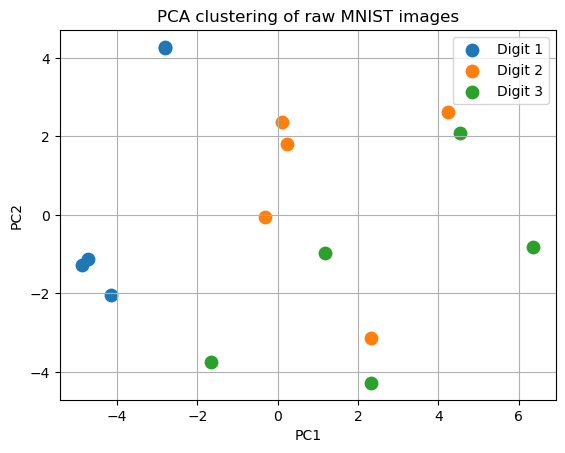
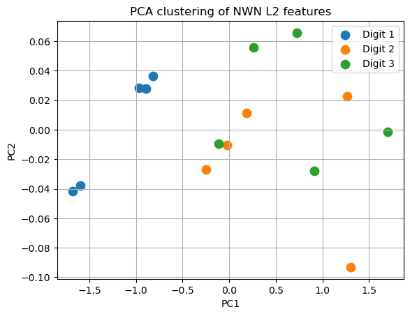
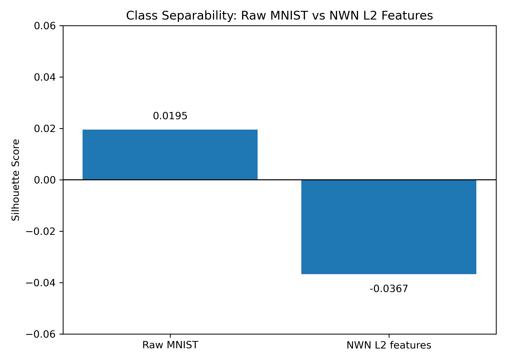
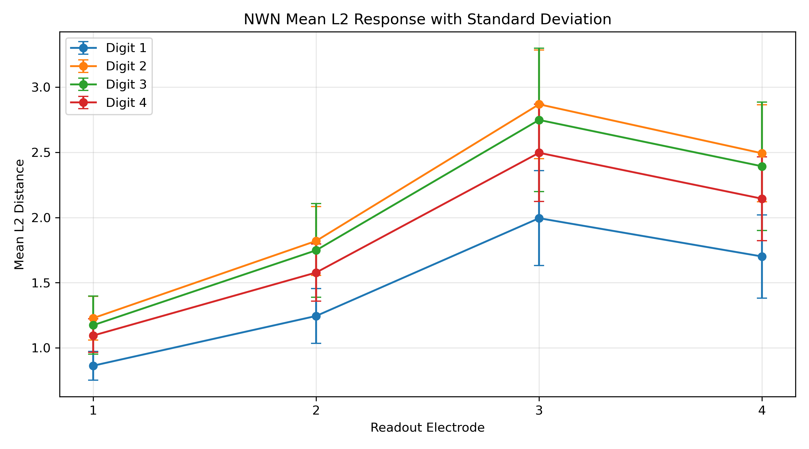
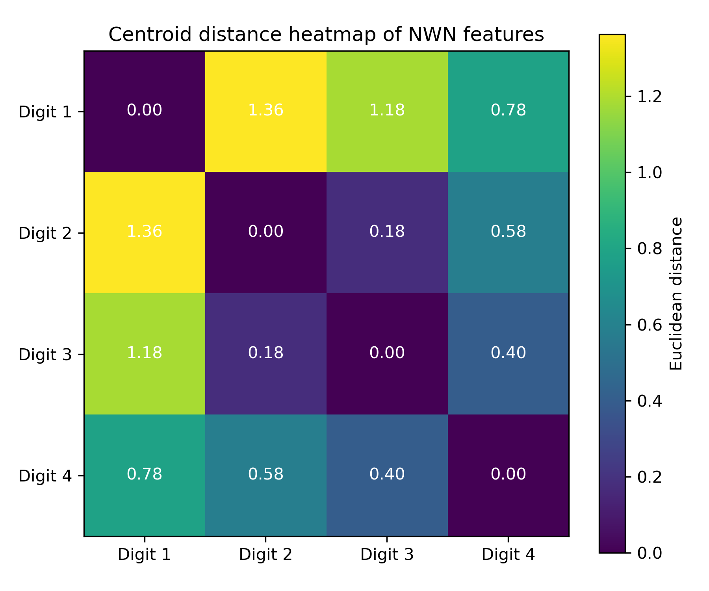
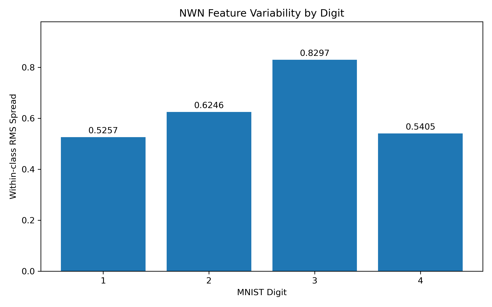

01 / Research
Neuromorphic Nanowire Networks
A simulation study of how a nanowire network transforms MNIST handwritten-digit inputs.

01 / Question
What the project asks
Can the dynamics of a nanowire network produce features that separate handwritten-digit classes? I compared patterns in the inputs with patterns in the simulated readouts to study the feature stage of physical reservoir computing.
02 / Approach
How it works
I encoded each 28 × 28 MNIST image as 784 sequential input voltages. The simulator includes a PyTorch implementation and models a network with 16 electrodes. The analysis uses the voltage traces from four readout electrodes.

View the original handwritten workflow

Checking the simulator response
Before comparing digits, I varied the input voltage range and time step. I used a sine wave to inspect how the four readouts responded to a predictable input. At a fixed upper voltage, a higher baseline drives dark pixels more strongly while reducing bright–dark contrast. The notes treat a possible intermediate operating range as a hypothesis.


From 15 to 80 images
The pilot used five examples each of digits 1, 2 and 3. The PCA view suggested a distinct region for digit 1 and overlap between digits 2 and 3. The expanded study used 20 examples each of digits 1, 2, 3 and 4, with a fixed setup and a reset of the simulated state between images.




Features and statistical analysis
For each of the four readouts, the L2 norm of the difference between the input and readout traces gives a Euclidean distance. I compared class means, variability, within-class spread and distances between class centroids. PCA provides a two-dimensional view. The silhouette scores come from the full standardised feature spaces.
Code from the research notebook
This pilot cell reshapes one 784-sample input and its readout traces to the image grid, then calculates one L2 distance per channel.
input_img = signals[0, :784].reshape(28, 28)
for i in range(4):
output_img = readout_voltages[i, :784].reshape(28, 28)
l2 = np.linalg.norm(input_img - output_img)
print(f"Electrode {i}: L2 norm = {l2:.4f}")The code guide includes the original sampling, PCA and statistical analysis cells. The runnable walkthrough also covers signal preparation, checkpoint recovery and plots using synthetic readouts.
03 / Contribution
My contribution
I undertook this first-year SSP project under the supervision of Professor Zdenka Kuncic and Dr Henry Westmacott. I explored input settings, used controlled sine-wave inputs to inspect the four readouts, and analysed digit-class structure in the resulting features. I documented this progression in my logbook and presented the pilot-to-expanded comparison and its limits. Earlier topology experiments by a colleague provided context for this work.
04 / Interpretation
What the project shows
The pilot gave a higher silhouette score for readout features than for raw inputs. In the 80-image study, both showed weak separation and the readout representation scored lower. The pilot and expanded sets used different images and digit classes.








What one distance per trace leaves out
Each L2 value summarises a whole trace, which may discard useful timing information. A next step would be to extract richer temporal features and evaluate a classifier on held-out images.
Where Welch’s t-test fits
Welch’s t-test is a possible follow-up for comparing a prespecified feature between two independent classes with potentially unequal variances. The four channels from the same image are related measurements. The reviewed logbook and notebooks record no Welch test result.
05 / Materials
Project materials
The figures show MNIST inputs and aggregate statistics from my analysis of simulated readouts. The research group retains the core simulator, configuration files and raw outputs.